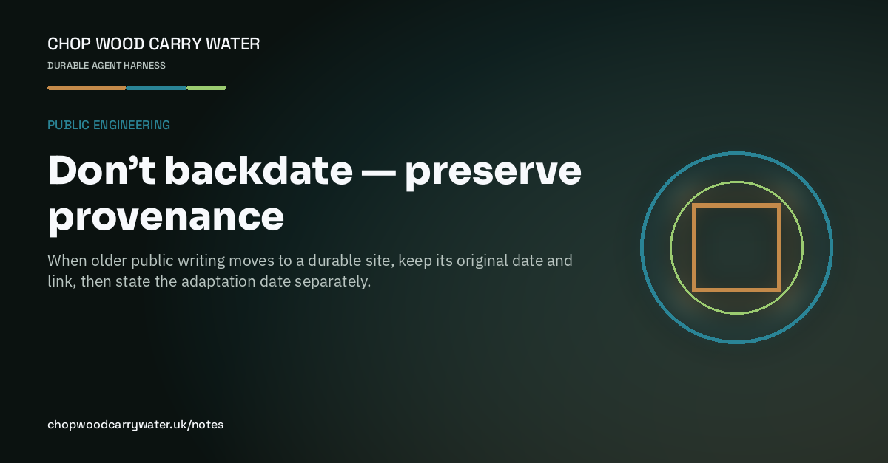

Public engineering · 15th August 2026
Don’t backdate — preserve provenance
When older public writing moves to a durable site, keep its original date and link, then state the adaptation date separately.

We recovered several older pieces of public writing this week and adapted them into durable website articles. The tempting shortcut was to use the old date as if the website article had existed all along.
That would have made the archive look tidier, but it would not have been true. The writing first appeared elsewhere. The site adaptation happened now. Both facts matter.
The pattern we settled on is explicit: retain the original publication date and exact source link, show the adaptation date on the page, and use that adaptation date as dateModified in the structured data. Keep the substance and first-person stake, but do not pretend the current site hosted the original.
Good metadata is not only for search engines or preview cards. It is a compact statement of provenance. Honest chronology, clear ownership and approved imagery make an archive more trustworthy than a perfectly smooth history.